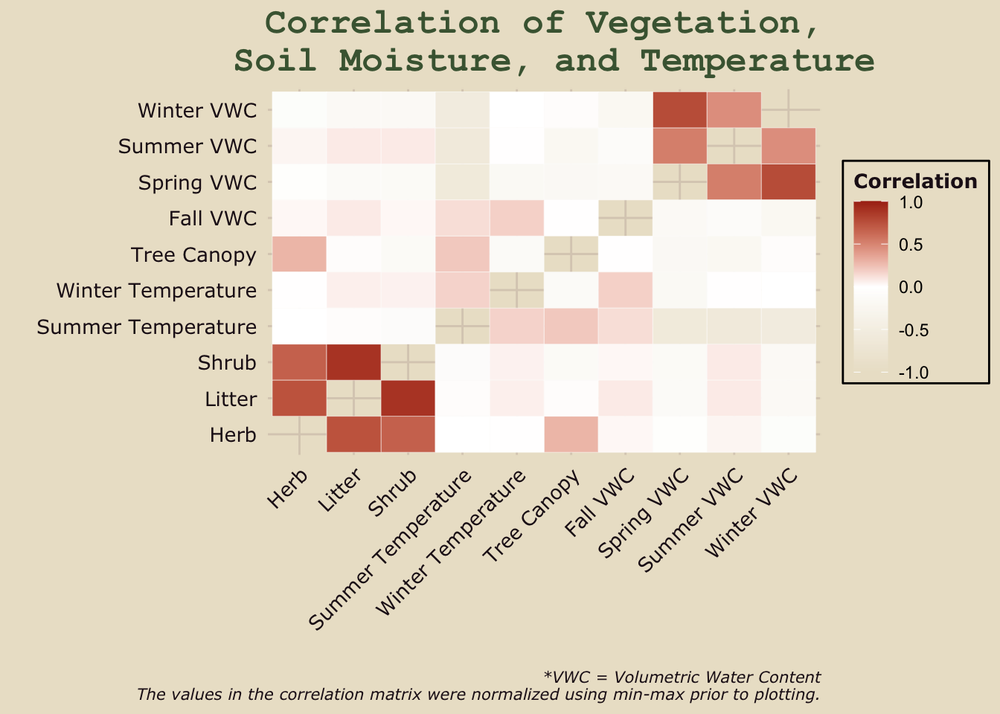
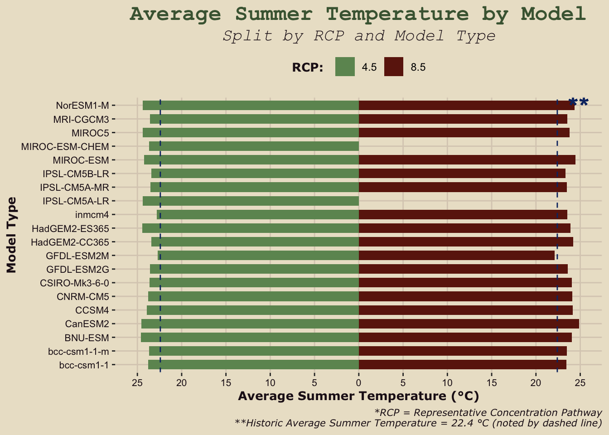
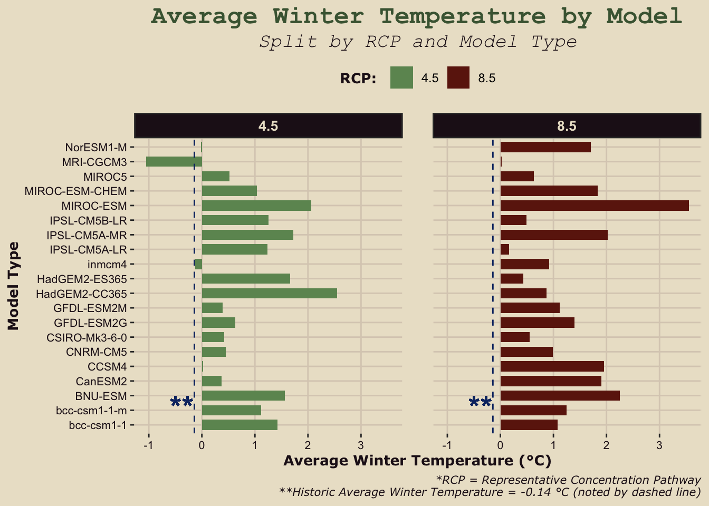

The natural bridges national monument is located in Utah, USA and is home to three natural bridges: Owachomo, Kachina, and Sipapu. These bridges are naturally occuring and formed by the erosive forces flowing through the White Canyon. The bridges are considered sacred by the Native American tribes in the region. Additionally, the monument is home to a variety of plants and vegetation. Thus, to understand the impact of the vegetation in the region on the climate, we will be analyzing the historic and near-term data collected and predicted (vegetation, soil moisture, and temperature).
Photograph by NPS / Jacob W. Frank
How have the Vegetation, Soil Moisture, and Temperature Changed Over Time?
To understand the relationship between vegetation, soil moisture, and temperature, we will first take a look at the historic data collected by USGS on these variables across time.
data <- historic %>%pivot_longer(cols =c("herb", "shrub", "treecanopy", "litter"), names_to ="vegetation", values_to ="veg_coverage") %>%group_by(year, vegetation) %>%summarize(avg_veg_coverage =mean(veg_coverage, na.rm =TRUE), .groups ='drop')# Define custom theming for Plotly and plottingplotly_theme <-list(plot_bgcolor ="#EBE2CE",paper_bgcolor ="#EBE2CE",font =list(family ="Courier New", color ="#21121B"),title =list(size =18, face ="bold", x =0.5, y =1, xanchor ="center", yanchor ="top", color ="#486340"),xaxis =list(title =list(text ="Year", font =list(size =10, family ="Verdana", color ="#21121B", face ="bold")),tickfont =list(size =8, color ="#21121B"),gridcolor ="#DACEBE",zerolinecolor ="#DACEBE" ),yaxis =list(title =list(text ="Average Percent of Vegetation Coverage (%)", font =list(size =10, family ="Verdana", color ="#21121B", face ="bold")),tickfont =list(size =8, color ="#21121B"),gridcolor ="#DACEBE",zerolinecolor ="#DACEBE",range =c(8, 18) ),legend =list(title =list(text ="Vegetation Type", font =list(size =10, face ="bold", family ="Verdana", color ="#21121B")),orientation ="h",x =0.5,xanchor ="center",y =0.995,yanchor ="top",bgcolor ="#EBE2CE",bordercolor ="#EBE2CE" ))plot_ly(data, x =~year, y =~avg_veg_coverage, color =~vegetation, colors = my_palette[4:7], type ='scatter', mode ='lines+markers',text =~paste('Year:', year, '<br>Vegetation:', vegetation, '<br>Average Coverage:', round(avg_veg_coverage, 2), '%'),hoverinfo ='text') %>%layout(title =list(text ="Vegetation Cover Over Time", font = plotly_theme$title),xaxis = plotly_theme$xaxis,yaxis = plotly_theme$yaxis,plot_bgcolor = plotly_theme$plot_bgcolor,paper_bgcolor = plotly_theme$paper_bgcolor,font = plotly_theme$font,legend = plotly_theme$legend )
Soil Moisture
# Trying with pivot techniquedata <- historic %>%pivot_longer(cols =c("vwc_spring_whole", "vwc_summer_whole", "vwc_fall_whole", "vwc_winter_whole"), names_to ="seasons", values_to ="vwc_vals") %>%mutate(seasons =case_when( seasons =="vwc_spring_whole"~"Spring", seasons =="vwc_summer_whole"~"Summer", seasons =="vwc_fall_whole"~"Fall", seasons =="vwc_winter_whole"~"Winter" )) %>%group_by(year, seasons) %>%summarize(avg_vwc =mean(vwc_vals, na.rm =TRUE), .groups ='drop')plotly_theme <-list(plot_bgcolor ="#EBE2CE",paper_bgcolor ="#EBE2CE",font =list(family ="Courier New", color ="#21121B"),title =list(size =18, face ="bold", x =0.5, y =1, xanchor ="center", yanchor ="top", color ="#486340"),xaxis =list(title =list(text ="Year", font =list(size =10, family ="Verdana", color ="#21121B", face ="bold")),tickfont =list(size =8, color ="#21121B"),gridcolor ="#DACEBE",zerolinecolor ="#DACEBE" ),yaxis =list(title =list(text ="Average Median Volumetric Water (m3/m^3)", font =list(size =10, family ="Verdana", color ="#21121B", face ="bold")),tickfont =list(size =8, color ="#21121B"),gridcolor ="#DACEBE",zerolinecolor ="#DACEBE",range =c(0.06, 0.195) ),legend =list(title =list(text ="Seasons", font =list(size =10, face ="bold", family ="Verdana", color ="#21121B")),orientation ="h",x =0.5,xanchor ="center",y =0.995,yanchor ="top",bgcolor ="#EBE2CE",bordercolor ="#EBE2CE" ))plot_ly(data, x =~year, y =~avg_vwc, color =~seasons, colors =c("#C45D71", "#DEB350", "#672B13", "#8799AC"),type ='scatter', mode ='lines+markers',text =~paste('Year:', year, '<br>Average Median Volumetric Water in Spring:', round(avg_vwc, 2), '(m3/m^3)'),hoverinfo ='text') %>%layout(title =list(text ="Volumetric Water Content of Soil by Season", font = plotly_theme$title),xaxis = plotly_theme$xaxis,yaxis = plotly_theme$yaxis,plot_bgcolor = plotly_theme$plot_bgcolor,paper_bgcolor = plotly_theme$paper_bgcolor,font = plotly_theme$font,legend = plotly_theme$legend )
Code
data <- historic %>%pivot_longer(cols =c("t_winter", "t_summer"), names_to ="seasons", values_to ="temp_vals") %>%mutate(seasons =case_when( seasons =="t_winter"~"Winter", seasons =="t_summer"~"Summer" )) %>%group_by(year, seasons) %>%summarize(avg_temp =mean(temp_vals, na.rm =TRUE), .groups ='drop')plotly_theme <-list(plot_bgcolor ="#EBE2CE",paper_bgcolor ="#EBE2CE",font =list(family ="Courier New", color ="#21121B"),title =list(size =18, face ="bold", x =0.5, y =1, xanchor ="center", yanchor ="top", color ="#486340"),xaxis =list(title =list(text ="Year", font =list(size =10, family ="Verdana", color ="#21121B", face ="bold")),tickfont =list(size =8, color ="#21121B"),gridcolor ="#DACEBE",zerolinecolor ="#DACEBE" ),yaxis =list(title =list(text ="Average Temperature (C)", font =list(size =10, family ="Verdana", color ="#21121B", face ="bold")),tickfont =list(size =8, color ="#21121B"),gridcolor ="#DACEBE",zerolinecolor ="#DACEBE",range =c(-3, 27) ),legend =list(title =list(text ="Seasons", font =list(size =10, face ="bold", family ="Verdana", color ="#21121B")),orientation ="h",x =0.5,xanchor ="center",y =0.995,yanchor ="top",bgcolor ="#EBE2CE",bordercolor ="#EBE2CE" ))plot_ly(data, x =~year, y =~avg_temp, color =~seasons, colors =c("#C45D71", "#DEB350", "#672B13", "#8799AC"),type ='scatter', mode ='lines+markers',text =~paste('Year:', year, '<br>Average Temperature:', round(avg_temp, 2), '°C'),hoverinfo ='text') %>%layout(title =list(text ="Temperature by Season over Time", font = plotly_theme$title),xaxis = plotly_theme$xaxis,yaxis = plotly_theme$yaxis,plot_bgcolor = plotly_theme$plot_bgcolor,paper_bgcolor = plotly_theme$paper_bgcolor,font = plotly_theme$font,legend = plotly_theme$legend )
From the time series data we can deduce a few key points. The vegetation, broken up into the percent of tree canopy, shrug, litter (dead plants and matter), and herbaceous plant coverage, has remained relatively stable over time, with a seasonal pattern every 3 to 4 years. For the soil moisture, or volumetric water content (VWC), with the exception of the summer months, the water content throughout the years has heavily fluctuated, with the highest water content in the winter month. This is especially important since the water content in the winter is then stored and used when growing plants in the spring. Lastly, temperature has also remained relatively stable over time, with the highest temperatures in the summer months and the lowest in the winter months.
What is the Historic Relationship between Vegetation, Soil Moisture, and Temperature?
The USGS data collectors collected both historic data and predicted near-term data through various climate models. The predicted temperature and soil moisture for multiple seasons through vegetation coverage and some other external variables as the input.
Thus, to better understand why these models were formed, let’s take a closer look at the historic relationship between vegetation, soil moisture, and temperature.
Historic Relationship
# Create a ggplot correlation matrix for all variables related to vegetation, soil moisture, and temperature#Normalizing the data since they are different units of measurementmin_max_normalize <-function(x) { (x -min(x, na.rm =TRUE)) / (max(x, na.rm =TRUE) -min(x, na.rm =TRUE))}correlation_matrix <- historic %>%select(year, herb, shrub, treecanopy, litter, vwc_spring_whole, vwc_summer_whole, vwc_fall_whole, vwc_winter_whole, t_winter, t_summer) %>%group_by(year) %>%summarize(across(everything(), ~mean(.x, na.rm =TRUE)), .groups ='drop') %>%select(-year) %>%mutate(across(everything(), min_max_normalize)) %>%#Normalizing with min-max cor() %>%as.data.frame() %>%rownames_to_column(var ="variable") %>%pivot_longer(cols =-variable, names_to ="variable2", values_to ="correlation") %>%filter(variable != variable2) %>%mutate(correlation =round(correlation, 2))display_names <-c("herb"="Herb","shrub"="Shrub","treecanopy"="Tree Canopy","litter"="Litter","vwc_spring_whole"="Spring VWC","vwc_summer_whole"="Summer VWC","vwc_fall_whole"="Fall VWC","vwc_winter_whole"="Winter VWC","t_winter"="Winter Temperature","t_summer"="Summer Temperature")ggplot(correlation_matrix, aes(x = variable, y = variable2, fill = correlation)) +geom_tile(color ="white") +scale_fill_gradient2(low ="#EBE2CE", high ="#AA2D17", mid ="white", midpoint =0, limit =c(-1, 1), space ="Lab", name ="Correlation") +scale_x_discrete(labels = display_names) +scale_y_discrete(labels = display_names) +theme_minimal() +theme(panel.background =element_rect(fill ="#EBE2CE", color =NA),panel.grid.minor =element_blank(),panel.grid.major =element_line(color ="#DACEBE"), panel.border =element_rect(color ="#EBE2CE", fill =NA, linewidth =0.5),plot.background =element_rect(fill ="#EBE2CE", color =NA),plot.title =element_text(size =18, face ="bold", hjust =0.5, color ="#486340", family ="Courier New"),plot.subtitle =element_text(size =14, face ="italic", hjust =0.5, color ="#21121B", family ="Courier New"),plot.caption =element_text(size =8, face ="italic", family ="Verdana", color ="#21121B"),axis.title =element_text(),axis.text.x =element_text(size =10, angle =45, hjust =1, color ="#21121B", family ="Verdana"), # Rotate x-axis textaxis.text.y =element_text(size =10, color ="#21121B", family ="Verdana"), strip.text =element_text(face ="bold", size =rel(1.5), colour ="#EBE2CE"),strip.background =element_rect(fill ="#21121B", size =1),legend.title =element_text(size =10, face ="bold", family ="Verdana", color ="#21121B"),legend.key =element_rect(color ="#EBE2CE"),legend.background =element_rect(fill ="#EBE2CE"),legend.box.background =element_rect(color ="#EBE2CE") ) +labs(title ="Correlation of Vegetation,\n Soil Moisture, and Temperature",x ="",y ="",caption ="*VWC = Volumetric Water Content\nThe values in the correlation matrix were normalized using min-max prior to plotting." )

From this correlation plot, we can note that vegetation does not seem to be strongly correlated with either soil moisture or temperature. However, we can note a few exceptions. Tree canopy coverage is correlated with summer temperatures and fall volumetric water content seems to be slightly correlated with winter temperatures. Thus, from an initial glance, it’s difficult to say whether vegetation was a good predictor for climate models.
Thus to understand the climate models of this area better, we will be analyzing the near-term data collected and predicted by the USGS for the years 2020-2024.
Future Projections: What are the Models Predicting?
As previously mentioned, the models predicted temperature and soil moisture for multiple seasons through vegetation coverage and some other external variables as the input.
Specifically, the models predicted two RCP scenarios (4.5 and 8.5). A 4.5 RCP scenario is a moderate scenario where greenhouse gasses are emitted at a slower rate than present day. An 8.5 RCP scenario is a high scenario where greenhouse gasses are to be emitted at present day’s pace or quicker.
Thus to understand the predictive models, we’ll take a look at the predicted temperatures for both summer and winter months in both RCP scenarios over multiple models.
scenario_names <-data.frame(scenario =c("sc22", "sc23", "sc24", "sc25", "sc26", "sc27", "sc28", "sc29", "sc30", "sc31", "sc32", "sc33", "sc34", "sc35", "sc36", "sc37", "sc38", "sc39", "sc40", "sc41", "sc42", "sc43", "sc44", "sc45", "sc46", "sc47", "sc48", "sc49", "sc50", "sc51", "sc52", "sc53", "sc54", "sc55", "sc56", "sc57", "sc58", "sc59", "sc60", "sc61"))# Using the data description, I will be extracting the model name extract_model_name <-function(scenario_code) {switch(scenario_code,"sc22"="bcc-csm1-1","sc23"="bcc-csm1-1-m","sc24"="BNU-ESM","sc25"="CanESM2","sc26"="CCSM4","sc27"="CNRM-CM5","sc28"="CSIRO-Mk3-6-0","sc29"="GFDL-ESM2G","sc30"="GFDL-ESM2M","sc31"="HadGEM2-CC365","sc32"="HadGEM2-ES365","sc33"="inmcm4","sc34"="IPSL-CM5A-LR","sc35"="IPSL-CM5A-MR","sc36"="IPSL-CM5B-LR","sc37"="MIROC-ESM","sc38"="MIROC-ESM-CHEM","sc39"="MIROC5","sc40"="MRI-CGCM3","sc41"="NorESM1-M","sc42"="bcc-csm1-1","sc43"="bcc-csm1-1-m","sc44"="BNU-ESM","sc45"="CanESM2","sc46"="CCSM4","sc47"="CNRM-CM5","sc48"="CSIRO-Mk3-6-0","sc49"="GFDL-ESM2G","sc50"="GFDL-ESM2M","sc51"="HadGEM2-CC365","sc52"="HadGEM2-ES365","sc53"="inmcm4","sc54"="IPSL-CM5A-LR","sc55"="IPSL-CM5A-MR","sc56"="IPSL-CM5B-LR","sc57"="MIROC-ESM","sc58"="MIROC-ESM-CHEM","sc59"="MIROC5","sc60"="MRI-CGCM3","sc61"="NorESM1-M")}extract_model_name <-function(scenario_code) {switch(scenario_code,"sc22"="bcc-csm1-1","sc23"="bcc-csm1-1-m","sc24"="BNU-ESM","sc25"="CanESM2","sc26"="CCSM4","sc27"="CNRM-CM5","sc28"="CSIRO-Mk3-6-0","sc29"="GFDL-ESM2G","sc30"="GFDL-ESM2M","sc31"="HadGEM2-CC365","sc32"="HadGEM2-ES365","sc33"="inmcm4","sc34"="IPSL-CM5A-LR","sc35"="IPSL-CM5A-MR","sc36"="IPSL-CM5B-LR","sc37"="MIROC-ESM","sc38"="MIROC-ESM-CHEM","sc39"="MIROC5","sc40"="MRI-CGCM3","sc41"="NorESM1-M","sc42"="bcc-csm1-1","sc43"="bcc-csm1-1-m","sc44"="BNU-ESM","sc45"="CanESM2","sc46"="CCSM4","sc47"="CNRM-CM5","sc48"="CSIRO-Mk3-6-0","sc49"="GFDL-ESM2G","sc50"="GFDL-ESM2M","sc51"="HadGEM2-CC365","sc52"="HadGEM2-ES365","sc53"="inmcm4","sc54"="IPSL-CM5A-LR","sc55"="IPSL-CM5A-MR","sc56"="IPSL-CM5B-LR","sc57"="MIROC-ESM","sc58"="MIROC-ESM-CHEM","sc59"="MIROC5","sc60"="MRI-CGCM3","sc61"="NorESM1-M")}scenario_names$model <-sapply(scenario_names$scenario, extract_model_name)#Merging scenario_names with recent datarecent <- recent %>%left_join(scenario_names, by ="scenario")# Create a population pyramid for average summer temp of each model#Get avg from historic data to plot a comparison line avg_summer_temp_historic <-mean(historic$t_summer, na.rm =TRUE)model_graph <- recent %>%group_by(rcp, model) %>%summarize(avg_temp =mean(t_summer, na.rm =TRUE), .groups ='drop') %>%# arrange(desc(avg_temp)) %>%ggplot(aes(x = model, y =ifelse(rcp =="4.5", -avg_temp, avg_temp), fill = rcp)) +geom_bar(stat ="identity", position ="identity", width =0.7) +geom_hline(yintercept=c(avg_summer_temp_historic, -avg_summer_temp_historic), linetype="dashed", color ="#0E3271") +geom_text(aes(x =Inf, y = avg_summer_temp_historic, label ="**"), vjust =0.99, hjust =-0.5, color ="#0E3271", size =8) +coord_flip() +scale_y_continuous(limits =c(-25,25), breaks =seq(-25,25, by =5), labels =c('25', '20', '15', '10', '5', '0', '5', '10', '15', '20', '25')) +scale_fill_manual(values =c("#6D9461", "#6C1D0F"), labels=c('4.5', '8.5')) +labs(title ="Average Summer Temperature by Model",subtitle ="Split by RCP and Model Type",x ="Model Type",y ="Average Summer Temperature (°C)",fill ="RCP: ",caption ="*RCP = Representative Concentration Pathway\n**Historic Average Summer Temperature = 22.4 °C (noted by dashed line)" ) + my_theme +theme(legend.position ="top", legend.direction ="horizontal", legend.justification ="center") model_graph

Future Projections - Winter Temperature
avg_winter_temp_historic <-mean(historic$t_winter, na.rm =TRUE)model_graph2 <- recent %>%group_by(rcp, model) %>%summarize(avg_temp =mean(t_winter, na.rm =TRUE), .groups ='drop') %>%ggplot(aes(x = avg_temp, y = model, fill = rcp)) +geom_bar(stat ="identity", position ="identity", width =0.7) +geom_vline(xintercept= avg_winter_temp_historic, linetype="dashed", color ="#0E3271") +facet_wrap(~rcp, ncol =2) +geom_text(aes(x = avg_winter_temp_historic, y ="bcc-csm1-1", label ="**"), vjust =-0.25, hjust =1, color ="#0E3271", size =8) +scale_fill_manual(values =c("#6D9461", "#6C1D0F"), labels=c('4.5', '8.5')) +labs(title ="Average Winter Temperature by Model",subtitle ="Split by RCP and Model Type",x ="Average Winter Temperature (°C)",y ="Model Type",fill ="RCP: ",caption ="*RCP = Representative Concentration Pathway\n**Historic Average Winter Temperature = -0.14 °C (noted by dashed line)" ) + my_theme +theme(legend.position ="top",legend.direction ="horizontal",legend.justification ="center",strip.text =element_text(size =10),panel.spacing =unit(0.75, "cm") )model_graph2

For the summer temperatures, using a population pyramid visualization, we see an approximately symmetrical distribution between the RCP scenarios. Additionally, compared to the historic average, we only see a slight increase in average temperature in both cases.
However, the winter temperature predictions are more interesting. The 4.5 RCP scenario has a few models predicting at or above historic averages. The 8.5 RCP scenario, however, has a more skewed distribution, with all predictions being far greater than the historic average (by 2 to 3 degrees).
What is the Effect of Vegetation on Future Winter Temperatures?
Now that we’ve seen that winter seems to be the season most affected by the RCP future scenarios, let’s take a closer look at the effect of vegetation on winter temperatures taking into account the location.
Through map views, we can see the effect of vegetation coverage (denoted by the size of the markers) on the average winter temperatures (denoted by the color of the markers) for each location within the Natural Bridges National Monument.
Click the filter on the top right to view by year.
vegetation_on_temp <- recent %>%group_by(year, lat, long) %>%summarize(avg_summer =mean(t_summer, na.rm =TRUE),avg_winter =mean(t_winter, na.rm =TRUE),avg_herb =mean(herb, na.rm =TRUE),avg_shrub =mean(shrub, na.rm =TRUE),avg_treecanopy =mean(treecanopy, na.rm =TRUE),avg_litter =mean(litter, na.rm =TRUE) ) %>%ungroup()# glimpse(vegetation_on_temp)write.csv(vegetation_on_temp, "data/loc_data.csv")#Public token for Mapboxmapbox_token <-"pk.eyJ1Ijoic2NoaW50aGFrIiwiYSI6ImNsd2ZubWpjczF0ZHkyanJzN3RiYW5kaTcifQ.3BLkd8s7pF8pXXaO3BXvyA"#Custom color scale for temperaturecustom_colorscale <-list(c(0, "rgb(232, 220, 197)"), # Cream colorc(1, "rgb(14, 50, 113)") # blue color)overall_min_temp <-min(vegetation_on_temp$avg_winter, na.rm =TRUE)overall_max_temp <-max(vegetation_on_temp$avg_winter, na.rm =TRUE)# Adding dropdown menu to select yearyears <-unique(vegetation_on_temp$year)# Initialize the plotly figurefig <-plot_ly() %>%layout(mapbox =list(accesstoken = mapbox_token,style ="outdoors",zoom =11.5,center =list(lat =mean(vegetation_on_temp$lat) -0.005, lon =mean(vegetation_on_temp$long)) ),paper_bgcolor ="#EBE2CE",title =list(text ="Effect of Tree Canopy Coverage on Average Winter Temperatures", font =list(size =18, face ="bold", x =0.5, y =1, xanchor ="center", yanchor ="top", color ="#486340")),yaxis =list(title =list(text ="Temperature (°C)", font =list(size =10, family ="Verdana", color ="#21121B", face ="bold"))),updatemenus =list(list(buttons =lapply(years, function(y) {list(method ="restyle",args =list("transforms[0].value", y),label =as.character(y) ) }),direction ="down",x =1.15,xanchor ="left",y =1.1,yanchor ="top",showactive =TRUE,active =0 ) ) )# Add traces for each year with transformsfor (y in years) { year_data <- vegetation_on_temp %>%filter(year == y) fig <- fig %>%add_trace(data = year_data,lat =~lat, lon =~long,type ='scattermapbox',mode ='markers',text =~paste("<br><b>Latitude:</b>", lat,"<br><b>Longitude:</b>", long,"<br><b>Average Tree Canopy Coverage:</b>", avg_treecanopy, '%',"<br><b>Average Winter Temperature:</b>", avg_winter, '°C' ),hoverinfo ='text',marker =list(size =~avg_treecanopy, color =~avg_winter, colorscale = custom_colorscale,showscale =TRUE,cmin = overall_min_temp,cmax = overall_max_temp,colorbar =list(title ="Temp(°C)")),transforms =list(list(type ='filter',target =~year,operation ='=',value = y ) ),showlegend =FALSE,name =as.character(y) )}fig
Shrub Coverage
# Initialize the plotly figurefig <-plot_ly() %>%layout(mapbox =list(accesstoken = mapbox_token,style ="outdoors",zoom =11.5,center =list(lat =mean(vegetation_on_temp$lat) -0.005, lon =mean(vegetation_on_temp$long)) ),paper_bgcolor ="#EBE2CE",title =list(text ="Effect of Shrub Coverage on Average Winter Temperatures", font =list(size =18, face ="bold", x =0.5, y =1, xanchor ="center", yanchor ="top", color ="#486340")),yaxis =list(title =list(text ="Temperature (°C)", font =list(size =10, family ="Verdana", color ="#21121B", face ="bold"))),updatemenus =list(list(buttons =lapply(years, function(y) {list(method ="restyle",args =list("transforms[0].value", y),label =as.character(y) ) }),direction ="down",x =1.15,xanchor ="left",y =1.1,yanchor ="top",showactive =TRUE,active =0 ) ) )# Add traces for each year with transformsfor (y in years) { year_data <- vegetation_on_temp %>%filter(year == y) fig <- fig %>%add_trace(data = year_data,lat =~lat, lon =~long,type ='scattermapbox',mode ='markers',text =~paste("<br><b>Latitude:</b>", lat,"<br><b>Longitude:</b>", long,"<br><b>Average Shrub Coverage:</b>", avg_shrub, '%',"<br><b>Average Winter Temperature:</b>", avg_winter, '°C' ),hoverinfo ='text',marker =list(size =~avg_shrub, color =~avg_winter, colorscale = custom_colorscale,showscale =TRUE,cmin = overall_min_temp,cmax = overall_max_temp,colorbar =list(title ="Temp(°C)")),transforms =list(list(type ='filter',target =~year,operation ='=',value = y ) ),showlegend =FALSE,name =as.character(y) )}fig
Herb Coverage
# Initialize the plotly figurefig <-plot_ly() %>%layout(mapbox =list(accesstoken = mapbox_token,style ="outdoors",zoom =11.5,center =list(lat =mean(vegetation_on_temp$lat) -0.005, lon =mean(vegetation_on_temp$long)) ),paper_bgcolor ="#EBE2CE",title =list(text ="Effect of Herbatious Vegetation Coverage on Average Winter Temperatures", font =list(size =18, face ="bold", x =0.5, y =1, xanchor ="center", yanchor ="top", color ="#486340")),yaxis =list(title =list(text ="Temperature (°C)", font =list(size =10, family ="Verdana", color ="#21121B", face ="bold"))),updatemenus =list(list(buttons =lapply(years, function(y) {list(method ="restyle",args =list("transforms[0].value", y),label =as.character(y) ) }),direction ="down",x =1.15,xanchor ="left",y =1.1,yanchor ="top",showactive =TRUE,active =0 ) ) )# Add traces for each year with transformsfor (y in years) { year_data <- vegetation_on_temp %>%filter(year == y) fig <- fig %>%add_trace(data = year_data,lat =~lat, lon =~long,type ='scattermapbox',mode ='markers',text =~paste("<br><b>Latitude:</b>", lat,"<br><b>Longitude:</b>", long,"<br><b>Average Herb Coverage:</b>", avg_herb, '%',"<br><b>Average Winter Temperature:</b>", avg_winter, '°C' ),hoverinfo ='text',marker =list(size =~avg_herb, color =~avg_winter, colorscale = custom_colorscale,showscale =TRUE,cmin = overall_min_temp,cmax = overall_max_temp,colorbar =list(title ="Temp(°C)")),transforms =list(list(type ='filter',target =~year,operation ='=',value = y ) ),showlegend =FALSE,name =as.character(y) )}fig
Litter Coverage
# Initialize the plotly figurefig <-plot_ly() %>%layout(mapbox =list(accesstoken = mapbox_token,style ="outdoors",zoom =11.5,center =list(lat =mean(vegetation_on_temp$lat) -0.005, lon =mean(vegetation_on_temp$long)) ),paper_bgcolor ="#EBE2CE",title =list(text ="Effect of Litter Coverage on Average Winter Temperatures", font =list(size =18, face ="bold", x =0.5, y =1, xanchor ="center", yanchor ="top", color ="#486340")),yaxis =list(title =list(text ="Temperature (°C)", font =list(size =10, family ="Verdana", color ="#21121B", face ="bold"))),updatemenus =list(list(buttons =lapply(years, function(y) {list(method ="restyle",args =list("transforms[0].value", y),label =as.character(y) ) }),direction ="down",x =1.15,xanchor ="left",y =1.1,yanchor ="top",showactive =TRUE,active =0 ) ) )# Add traces for each year with transformsfor (y in years) { year_data <- vegetation_on_temp %>%filter(year == y) fig <- fig %>%add_trace(data = year_data,lat =~lat, lon =~long,type ='scattermapbox',mode ='markers',text =~paste("<br><b>Latitude:</b>", lat,"<br><b>Longitude:</b>", long,"<br><b>Average Litter Coverage:</b>", avg_litter, '%',"<br><b>Average Winter Temperature:</b>", avg_winter, '°C' ),hoverinfo ='text',marker =list(size =~avg_litter, color =~avg_winter, colorscale = custom_colorscale,showscale =TRUE,cmin = overall_min_temp,cmax = overall_max_temp,colorbar =list(title ="Temp(°C)")),transforms =list(list(type ='filter',target =~year,operation ='=',value = y ) ),showlegend =FALSE,name =as.character(y) )}fig
From the map views, we can see that the effect of vegetation coverage on winter temperatures is not as clear as we would have hoped. While we see varying coverage of vegetation across the park, larger coverage is not necessarily correlated with higher or lower temperatures. It seems that lower temperatures are more common in the north eastern region of the park, while higher temperatures are more common elsewhere.
What is the Effect of Vegetation on Future Soil Moisture in Winter?
Now that we’ve seen the effect of vegetation on winter temperatures, let’s take a closer look at the effect of vegetation on winter soil moisture, a key factor to determining growth in the spring and summer months.
Click the filter on the top right to view by year.
vegetation_on_soil <- recent %>%group_by(year, lat, long) %>%summarize(avg_vwc_winter =mean(vwc_winter_whole, na.rm =TRUE),avg_herb =mean(herb, na.rm =TRUE),avg_shrub =mean(shrub, na.rm =TRUE),avg_treecanopy =mean(treecanopy, na.rm =TRUE),avg_litter =mean(litter, na.rm =TRUE) ) %>%ungroup()#Custom color scale for temperaturecustom_colorscale <-list(c(0, "rgb(232, 220, 197)"), # Cream colorc(1, "rgb(112, 90, 137)") # purple color)overall_min_temp <-min(vegetation_on_soil$avg_vwc_winter, na.rm =TRUE)overall_max_temp <-max(vegetation_on_soil$avg_vwc_winter, na.rm =TRUE)# Adding dropdown menu to select yearyears <-unique(vegetation_on_soil$year)# Initialize the plotly figurefig <-plot_ly() %>%layout(mapbox =list(accesstoken = mapbox_token,style ="outdoors",zoom =11.5,center =list(lat =mean(vegetation_on_soil$lat) -0.005, lon =mean(vegetation_on_soil$long)) ),paper_bgcolor ="#EBE2CE",title =list(text ="Effect of Tree Canopy Coverage on \nAverage Winter Volumetric Water Content", font =list(size =18, face ="bold", x =0.5, y =1, xanchor ="center", yanchor ="top", color ="#486340")),yaxis =list(title =list(text ="Volumetric Water Content (m^3 / m^3)", font =list(size =10, family ="Verdana", color ="#21121B", face ="bold"))),updatemenus =list(list(buttons =lapply(years, function(y) {list(method ="restyle",args =list("transforms[0].value", y),label =as.character(y) ) }),direction ="down",x =1.15,xanchor ="left",y =1.1,yanchor ="top",showactive =TRUE,active =0 ) ) )# Add traces for each year with transformsfor (y in years) { year_data <- vegetation_on_soil %>%filter(year == y) fig <- fig %>%add_trace(data = year_data,lat =~lat, lon =~long,type ='scattermapbox',mode ='markers',text =~paste("<br><b>Latitude:</b>", lat,"<br><b>Longitude:</b>", long,"<br><b>Average Tree Canopy Coverage:</b>", avg_treecanopy, '%',"<br><b>Average Volumetric Water Content:</b>", avg_vwc_winter, '(m^3/m^3)' ),hoverinfo ='text',marker =list(size =~avg_treecanopy, color =~avg_vwc_winter, colorscale = custom_colorscale,showscale =TRUE,cmin = overall_min_temp,cmax = overall_max_temp,colorbar =list(title ="VWC(m^3/m^3)")),transforms =list(list(type ='filter',target =~year,operation ='=',value = y ) ),showlegend =FALSE,name =as.character(y) )}fig
Shrub Coverage
# Initialize the plotly figure# Initialize the plotly figurefig <-plot_ly() %>%layout(mapbox =list(accesstoken = mapbox_token,style ="outdoors",zoom =11.5,center =list(lat =mean(vegetation_on_soil$lat) -0.005, lon =mean(vegetation_on_soil$long)) ),paper_bgcolor ="#EBE2CE",title =list(text ="Effect of Shrub Coverage on \nAverage Winter Volumetric Water Content", font =list(size =18, face ="bold", x =0.5, y =1, xanchor ="center", yanchor ="top", color ="#486340")),yaxis =list(title =list(text ="Volumetric Water Content (m^3 / m^3)", font =list(size =10, family ="Verdana", color ="#21121B", face ="bold"))),updatemenus =list(list(buttons =lapply(years, function(y) {list(method ="restyle",args =list("transforms[0].value", y),label =as.character(y) ) }),direction ="down",x =1.15,xanchor ="left",y =1.1,yanchor ="top",showactive =TRUE,active =0 ) ) )# Add traces for each year with transformsfor (y in years) { year_data <- vegetation_on_soil %>%filter(year == y) fig <- fig %>%add_trace(data = year_data,lat =~lat, lon =~long,type ='scattermapbox',mode ='markers',text =~paste("<br><b>Latitude:</b>", lat,"<br><b>Longitude:</b>", long,"<br><b>Average Shrub Coverage:</b>", avg_shrub, '%',"<br><b>Average Volumetric Water Content:</b>", avg_vwc_winter, '(m^3/m^3)' ),hoverinfo ='text',marker =list(size =~avg_shrub, color =~avg_vwc_winter, colorscale = custom_colorscale,showscale =TRUE,cmin = overall_min_temp,cmax = overall_max_temp,colorbar =list(title ="VWC(m^3/m^3)")),transforms =list(list(type ='filter',target =~year,operation ='=',value = y ) ),showlegend =FALSE,name =as.character(y) )}fig
Herb Coverage
# Initialize the plotly figure# Initialize the plotly figurefig <-plot_ly() %>%layout(mapbox =list(accesstoken = mapbox_token,style ="outdoors",zoom =11.5,center =list(lat =mean(vegetation_on_soil$lat) -0.005, lon =mean(vegetation_on_soil$long)) ),paper_bgcolor ="#EBE2CE",title =list(text ="Effect of Herb Coverage on \nAverage Winter Volumetric Water Content", font =list(size =18, face ="bold", x =0.5, y =1, xanchor ="center", yanchor ="top", color ="#486340")),yaxis =list(title =list(text ="Volumetric Water Content (m^3 / m^3)", font =list(size =10, family ="Verdana", color ="#21121B", face ="bold"))),updatemenus =list(list(buttons =lapply(years, function(y) {list(method ="restyle",args =list("transforms[0].value", y),label =as.character(y) ) }),direction ="down",x =1.15,xanchor ="left",y =1.1,yanchor ="top",showactive =TRUE,active =0 ) ) )# Add traces for each year with transformsfor (y in years) { year_data <- vegetation_on_soil %>%filter(year == y) fig <- fig %>%add_trace(data = year_data,lat =~lat, lon =~long,type ='scattermapbox',mode ='markers',text =~paste("<br><b>Latitude:</b>", lat,"<br><b>Longitude:</b>", long,"<br><b>Average Herb Coverage:</b>", avg_herb, '%',"<br><b>Average Volumetric Water Content:</b>", avg_vwc_winter, '(m^3/m^3)' ),hoverinfo ='text',marker =list(size =~avg_herb, color =~avg_vwc_winter, colorscale = custom_colorscale,showscale =TRUE,cmin = overall_min_temp,cmax = overall_max_temp,colorbar =list(title ="VWC(m^3/m^3)")),transforms =list(list(type ='filter',target =~year,operation ='=',value = y ) ),showlegend =FALSE,name =as.character(y) )}fig
Litter Coverage
# Initialize the plotly figurefig <-plot_ly() %>%layout(mapbox =list(accesstoken = mapbox_token,style ="outdoors",zoom =11.5,center =list(lat =mean(vegetation_on_soil$lat) -0.005, lon =mean(vegetation_on_soil$long)) ),paper_bgcolor ="#EBE2CE",title =list(text ="Effect of Litter Coverage on \nAverage Winter Volumetric Water Content", font =list(size =18, face ="bold", x =0.5, y =1, xanchor ="center", yanchor ="top", color ="#486340")),yaxis =list(title =list(text ="Volumetric Water Content (m^3 / m^3)", font =list(size =10, family ="Verdana", color ="#21121B", face ="bold"))),updatemenus =list(list(buttons =lapply(years, function(y) {list(method ="restyle",args =list("transforms[0].value", y),label =as.character(y) ) }),direction ="down",x =1.15,xanchor ="left",y =1.1,yanchor ="top",showactive =TRUE,active =0 ) ) )# Add traces for each year with transformsfor (y in years) { year_data <- vegetation_on_soil %>%filter(year == y) fig <- fig %>%add_trace(data = year_data,lat =~lat, lon =~long,type ='scattermapbox',mode ='markers',text =~paste("<br><b>Latitude:</b>", lat,"<br><b>Longitude:</b>", long,"<br><b>Average Litter Coverage:</b>", avg_litter, '%',"<br><b>Average Volumetric Water Content:</b>", avg_vwc_winter, '(m^3/m^3)' ),hoverinfo ='text',marker =list(size =~avg_litter, color =~avg_vwc_winter, colorscale = custom_colorscale,showscale =TRUE,cmin = overall_min_temp,cmax = overall_max_temp,colorbar =list(title ="VWC(m^3/m^3)")),transforms =list(list(type ='filter',target =~year,operation ='=',value = y ) ),showlegend =FALSE,name =as.character(y) )}fig
These maps provide better context to the correlation issues we noticed earlier. Tree canopy coverage and litter seem to have a stronger correlation with soil moisture than shrub and herb coverage. While it’s not very clear, the correlation between larger tree canopy and litter coverage with higher soil moisture levels is present. Again, we see the most coverage and most VWC in the northeast region of the park.
Conclusions
🌳 Time Series Analysis: Vegetation levels have stayed consistent in the area for years. However, the average summer and winter temperatures have been slightly increasing over the years. Soil moisture experiences seasonal fluctuations, with the highest levels in the winter months.
🌳 Historic Relationship: Vegetation did not appear to strongly correlate with the overall temperatures and VWC by seasons. Thus, we may see inconsistent patterns between the historic and near-term data.
🌳 RCP Seasonal Effect:The RCP scenarios show a slight increase in average summer temperatures, but a drastic increase in winter temperatures. This could be due to the increased greenhouse gas emissions in the 8.5 RCP scenario, however, it is clear that climate change, regardless of input variables, has a stronger effect on winter than summer temperatures.
🌳 Vegetation and Winter Temperatures: The effect of vegetation on winter temperatures is not as clear as we would have hoped. Lower temperatures are more common in the north eastern region of the park, while higher temperatures are more common elsewhere, but this is not also correlated with vegetation coverage.
🌳 Vegetation and Soil Moisture: The correlation between larger tree canopy and litter coverage with higher soil moisture levels is present. Again, we see the most coverage and most VWC in the northeast region of the park.
Overall, our historic data shows that the park has been experiencing a seasonal fluctuation in vegetation coverage and soil moisture levels over the years. Temperatures seem to be ever so slightly increasing, however, the future projections show a drastic increase in winter temperatures. However, vegetation doesn’t appear to have a direct effect on temperature or soil moisture levels across the historic or predicted years.
We are most likely seeing slightly greater soil moisture, lower winter temperatures, and larger vegetation coverage for tree canopies and litter within the northeast region of the park due to historical precedence of fertile ground, and not a consequence of vegetation reversing global warming projections. There is simply not enough proof or correlation based on the provided to say otherwise.
Source Code
---title: ""format: html: page-layout: article css: styles.css code-fold: true code-tools: true toc: true toc-location: left---:::{.column-screen-inset}:::### By: sc2325 {.subheader}---## What is the Natural Bridges National Monument? {.subheader}The natural bridges national monument is located in Utah, USA and is home to three natural bridges: Owachomo, Kachina, and Sipapu. These bridges are naturally occuring and formed by the erosive forces flowing through the White Canyon. The bridges are considered sacred by the Native American tribes in the region. Additionally, the monument is home to a variety of plants and vegetation. Thus, to understand the impact of the vegetation in the region on the climate, we will be analyzing the historic and near-term data collected and predicted (vegetation, soil moisture, and temperature).{width=90%}## How have the Vegetation, Soil Moisture, and Temperature Changed Over Time? {.subheader}To understand the relationship between vegetation, soil moisture, and temperature, we will first take a look at the historic data collected by [USGS](https://www.usgs.gov/) on these variables across time. <!-- IMPORTS AND THEME -->```{r}#| echo: false#| warning: falselibrary(tidyverse)library(janitor)library(ggplot2)library(leaflet)library(dplyr)library(plotly)library(gganimate)library(sf)# library(ggspatial)# library(mapview)historic <-read.csv("data/NABR_historic.csv")recent <-read.csv("data/nearterm_data_2020-2024.csv")historic <-clean_names(historic)historic <- historic %>%mutate(rcp =as.factor(rcp))%>%distinct()recent <-clean_names(recent)recent <- recent %>%mutate(rcp =as.factor(rcp))%>%distinct()my_palette <-c("#EBE2CE", "#21121B", "#502419", "#AA2D17", "#D7702E", "#486340", "#9ED7CF", "#FAA62E")my_theme <-theme_bw() +theme(panel.background =element_rect(fill ="#EBE2CE", color =NA),panel.grid.minor =element_blank(),panel.grid.major =element_line(color ="#DACEBE"), panel.border =element_rect(color ="#EBE2CE", fill =NA, linewidth =0.5),plot.background =element_rect(fill ="#EBE2CE", color =NA),plot.title =element_text(size =18, face ="bold", hjust =0.5, color ="#486340", family ="Courier New"),plot.subtitle =element_text(size =14, face ="italic", hjust =0.5, color ="#21121B", family ="Courier New"),plot.caption =element_text(size =8, face ="italic", family ="Verdana", color ="#21121B"),axis.title =element_text(size =10, family ="Verdana", color ="#21121B", face ="bold"),axis.text =element_text(size =8, color ="#21121B"), strip.text =element_text(face ="bold", size =rel(1.5), colour ="#EBE2CE"),strip.background =element_rect(fill ="#21121B", size =1),legend.title =element_text(size =10, face ="bold", family ="Verdana", color ="#21121B"),legend.key =element_rect(color ="#EBE2CE"),legend.background =element_rect(fill ="#EBE2CE"),legend.box.background =element_rect(color ="#EBE2CE"),legend.position =c(0.99, 0.99), # Adjust as neededlegend.justification =c(1, 1) ) ```::: {.panel-tabset}## Vegetation ```{r}#| code-summary: "Vegetation Coverage"#| warning: falsedata <- historic %>%pivot_longer(cols =c("herb", "shrub", "treecanopy", "litter"), names_to ="vegetation", values_to ="veg_coverage") %>%group_by(year, vegetation) %>%summarize(avg_veg_coverage =mean(veg_coverage, na.rm =TRUE), .groups ='drop')# Define custom theming for Plotly and plottingplotly_theme <-list(plot_bgcolor ="#EBE2CE",paper_bgcolor ="#EBE2CE",font =list(family ="Courier New", color ="#21121B"),title =list(size =18, face ="bold", x =0.5, y =1, xanchor ="center", yanchor ="top", color ="#486340"),xaxis =list(title =list(text ="Year", font =list(size =10, family ="Verdana", color ="#21121B", face ="bold")),tickfont =list(size =8, color ="#21121B"),gridcolor ="#DACEBE",zerolinecolor ="#DACEBE" ),yaxis =list(title =list(text ="Average Percent of Vegetation Coverage (%)", font =list(size =10, family ="Verdana", color ="#21121B", face ="bold")),tickfont =list(size =8, color ="#21121B"),gridcolor ="#DACEBE",zerolinecolor ="#DACEBE",range =c(8, 18) ),legend =list(title =list(text ="Vegetation Type", font =list(size =10, face ="bold", family ="Verdana", color ="#21121B")),orientation ="h",x =0.5,xanchor ="center",y =0.995,yanchor ="top",bgcolor ="#EBE2CE",bordercolor ="#EBE2CE" ))plot_ly(data, x =~year, y =~avg_veg_coverage, color =~vegetation, colors = my_palette[4:7], type ='scatter', mode ='lines+markers',text =~paste('Year:', year, '<br>Vegetation:', vegetation, '<br>Average Coverage:', round(avg_veg_coverage, 2), '%'),hoverinfo ='text') %>%layout(title =list(text ="Vegetation Cover Over Time", font = plotly_theme$title),xaxis = plotly_theme$xaxis,yaxis = plotly_theme$yaxis,plot_bgcolor = plotly_theme$plot_bgcolor,paper_bgcolor = plotly_theme$paper_bgcolor,font = plotly_theme$font,legend = plotly_theme$legend )```## Soil Moisture ```{r}#| warning: false#| code-summary: "Soil Moisture"# Trying with pivot techniquedata <- historic %>%pivot_longer(cols =c("vwc_spring_whole", "vwc_summer_whole", "vwc_fall_whole", "vwc_winter_whole"), names_to ="seasons", values_to ="vwc_vals") %>%mutate(seasons =case_when( seasons =="vwc_spring_whole"~"Spring", seasons =="vwc_summer_whole"~"Summer", seasons =="vwc_fall_whole"~"Fall", seasons =="vwc_winter_whole"~"Winter" )) %>%group_by(year, seasons) %>%summarize(avg_vwc =mean(vwc_vals, na.rm =TRUE), .groups ='drop')plotly_theme <-list(plot_bgcolor ="#EBE2CE",paper_bgcolor ="#EBE2CE",font =list(family ="Courier New", color ="#21121B"),title =list(size =18, face ="bold", x =0.5, y =1, xanchor ="center", yanchor ="top", color ="#486340"),xaxis =list(title =list(text ="Year", font =list(size =10, family ="Verdana", color ="#21121B", face ="bold")),tickfont =list(size =8, color ="#21121B"),gridcolor ="#DACEBE",zerolinecolor ="#DACEBE" ),yaxis =list(title =list(text ="Average Median Volumetric Water (m3/m^3)", font =list(size =10, family ="Verdana", color ="#21121B", face ="bold")),tickfont =list(size =8, color ="#21121B"),gridcolor ="#DACEBE",zerolinecolor ="#DACEBE",range =c(0.06, 0.195) ),legend =list(title =list(text ="Seasons", font =list(size =10, face ="bold", family ="Verdana", color ="#21121B")),orientation ="h",x =0.5,xanchor ="center",y =0.995,yanchor ="top",bgcolor ="#EBE2CE",bordercolor ="#EBE2CE" ))plot_ly(data, x =~year, y =~avg_vwc, color =~seasons, colors =c("#C45D71", "#DEB350", "#672B13", "#8799AC"),type ='scatter', mode ='lines+markers',text =~paste('Year:', year, '<br>Average Median Volumetric Water in Spring:', round(avg_vwc, 2), '(m3/m^3)'),hoverinfo ='text') %>%layout(title =list(text ="Volumetric Water Content of Soil by Season", font = plotly_theme$title),xaxis = plotly_theme$xaxis,yaxis = plotly_theme$yaxis,plot_bgcolor = plotly_theme$plot_bgcolor,paper_bgcolor = plotly_theme$paper_bgcolor,font = plotly_theme$font,legend = plotly_theme$legend )```## Temperature```{r}data <- historic %>%pivot_longer(cols =c("t_winter", "t_summer"), names_to ="seasons", values_to ="temp_vals") %>%mutate(seasons =case_when( seasons =="t_winter"~"Winter", seasons =="t_summer"~"Summer" )) %>%group_by(year, seasons) %>%summarize(avg_temp =mean(temp_vals, na.rm =TRUE), .groups ='drop')plotly_theme <-list(plot_bgcolor ="#EBE2CE",paper_bgcolor ="#EBE2CE",font =list(family ="Courier New", color ="#21121B"),title =list(size =18, face ="bold", x =0.5, y =1, xanchor ="center", yanchor ="top", color ="#486340"),xaxis =list(title =list(text ="Year", font =list(size =10, family ="Verdana", color ="#21121B", face ="bold")),tickfont =list(size =8, color ="#21121B"),gridcolor ="#DACEBE",zerolinecolor ="#DACEBE" ),yaxis =list(title =list(text ="Average Temperature (C)", font =list(size =10, family ="Verdana", color ="#21121B", face ="bold")),tickfont =list(size =8, color ="#21121B"),gridcolor ="#DACEBE",zerolinecolor ="#DACEBE",range =c(-3, 27) ),legend =list(title =list(text ="Seasons", font =list(size =10, face ="bold", family ="Verdana", color ="#21121B")),orientation ="h",x =0.5,xanchor ="center",y =0.995,yanchor ="top",bgcolor ="#EBE2CE",bordercolor ="#EBE2CE" ))plot_ly(data, x =~year, y =~avg_temp, color =~seasons, colors =c("#C45D71", "#DEB350", "#672B13", "#8799AC"),type ='scatter', mode ='lines+markers',text =~paste('Year:', year, '<br>Average Temperature:', round(avg_temp, 2), '°C'),hoverinfo ='text') %>%layout(title =list(text ="Temperature by Season over Time", font = plotly_theme$title),xaxis = plotly_theme$xaxis,yaxis = plotly_theme$yaxis,plot_bgcolor = plotly_theme$plot_bgcolor,paper_bgcolor = plotly_theme$paper_bgcolor,font = plotly_theme$font,legend = plotly_theme$legend )```:::From the time series data we can deduce a few key points. The vegetation, broken up into the percent of tree canopy, shrug, litter (dead plants and matter), and herbaceous plant coverage, has remained relatively stable over time, with a seasonal pattern every 3 to 4 years. For the soil moisture, or volumetric water content (VWC), with the exception of the summer months, the water content throughout the years has heavily fluctuated, with the highest water content in the winter month. This is especially important since the water content in the winter is then stored and used when growing plants in the spring. Lastly, temperature has also remained relatively stable over time, with the highest temperatures in the summer months and the lowest in the winter months.---## What is the Historic Relationship between Vegetation, Soil Moisture, and Temperature? {.subheader} The USGS data collectors collected both historic data and predicted near-term data through various climate models. The predicted temperature and soil moisture for multiple seasons through vegetation coverage and some other external variables as the input. Thus, to better understand why these models were formed, let's take a closer look at the historic relationship between vegetation, soil moisture, and temperature.```{r}#| warning: false#| code-summary: "Historic Relationship"# Create a ggplot correlation matrix for all variables related to vegetation, soil moisture, and temperature#Normalizing the data since they are different units of measurementmin_max_normalize <-function(x) { (x -min(x, na.rm =TRUE)) / (max(x, na.rm =TRUE) -min(x, na.rm =TRUE))}correlation_matrix <- historic %>%select(year, herb, shrub, treecanopy, litter, vwc_spring_whole, vwc_summer_whole, vwc_fall_whole, vwc_winter_whole, t_winter, t_summer) %>%group_by(year) %>%summarize(across(everything(), ~mean(.x, na.rm =TRUE)), .groups ='drop') %>%select(-year) %>%mutate(across(everything(), min_max_normalize)) %>%#Normalizing with min-max cor() %>%as.data.frame() %>%rownames_to_column(var ="variable") %>%pivot_longer(cols =-variable, names_to ="variable2", values_to ="correlation") %>%filter(variable != variable2) %>%mutate(correlation =round(correlation, 2))display_names <-c("herb"="Herb","shrub"="Shrub","treecanopy"="Tree Canopy","litter"="Litter","vwc_spring_whole"="Spring VWC","vwc_summer_whole"="Summer VWC","vwc_fall_whole"="Fall VWC","vwc_winter_whole"="Winter VWC","t_winter"="Winter Temperature","t_summer"="Summer Temperature")ggplot(correlation_matrix, aes(x = variable, y = variable2, fill = correlation)) +geom_tile(color ="white") +scale_fill_gradient2(low ="#EBE2CE", high ="#AA2D17", mid ="white", midpoint =0, limit =c(-1, 1), space ="Lab", name ="Correlation") +scale_x_discrete(labels = display_names) +scale_y_discrete(labels = display_names) +theme_minimal() +theme(panel.background =element_rect(fill ="#EBE2CE", color =NA),panel.grid.minor =element_blank(),panel.grid.major =element_line(color ="#DACEBE"), panel.border =element_rect(color ="#EBE2CE", fill =NA, linewidth =0.5),plot.background =element_rect(fill ="#EBE2CE", color =NA),plot.title =element_text(size =18, face ="bold", hjust =0.5, color ="#486340", family ="Courier New"),plot.subtitle =element_text(size =14, face ="italic", hjust =0.5, color ="#21121B", family ="Courier New"),plot.caption =element_text(size =8, face ="italic", family ="Verdana", color ="#21121B"),axis.title =element_text(),axis.text.x =element_text(size =10, angle =45, hjust =1, color ="#21121B", family ="Verdana"), # Rotate x-axis textaxis.text.y =element_text(size =10, color ="#21121B", family ="Verdana"), strip.text =element_text(face ="bold", size =rel(1.5), colour ="#EBE2CE"),strip.background =element_rect(fill ="#21121B", size =1),legend.title =element_text(size =10, face ="bold", family ="Verdana", color ="#21121B"),legend.key =element_rect(color ="#EBE2CE"),legend.background =element_rect(fill ="#EBE2CE"),legend.box.background =element_rect(color ="#EBE2CE") ) +labs(title ="Correlation of Vegetation,\n Soil Moisture, and Temperature",x ="",y ="",caption ="*VWC = Volumetric Water Content\nThe values in the correlation matrix were normalized using min-max prior to plotting." )```From this correlation plot, we can note that vegetation does not seem to be strongly correlated with either soil moisture or temperature. However, we can note a few exceptions. Tree canopy coverage is correlated with summer temperatures and fall volumetric water content seems to be slightly correlated with winter temperatures. Thus, from an initial glance, it's difficult to say whether vegetation was a good predictor for climate models.Thus to understand the climate models of this area better, we will be analyzing the near-term data collected and predicted by the USGS for the years 2020-2024.---## Future Projections: What are the Models Predicting? {.subheader}As previously mentioned, the models predicted temperature and soil moisture for multiple seasons through vegetation coverage and some other external variables as the input.Specifically, the models predicted two RCP scenarios (4.5 and 8.5). A 4.5 RCP scenario is a moderate scenario where greenhouse gasses are emitted at a slower rate than present day. An 8.5 RCP scenario is a high scenario where greenhouse gasses are to be emitted at present day’s pace or quicker.Thus to understand the predictive models, we'll take a look at the predicted temperatures for both summer and winter months in both RCP scenarios over multiple models.::: {.panel-tabset}## Summer Avg Temperature```{r}#| warning: false#| code-summary: "Future Projections - Summer Temperature"scenario_names <-data.frame(scenario =c("sc22", "sc23", "sc24", "sc25", "sc26", "sc27", "sc28", "sc29", "sc30", "sc31", "sc32", "sc33", "sc34", "sc35", "sc36", "sc37", "sc38", "sc39", "sc40", "sc41", "sc42", "sc43", "sc44", "sc45", "sc46", "sc47", "sc48", "sc49", "sc50", "sc51", "sc52", "sc53", "sc54", "sc55", "sc56", "sc57", "sc58", "sc59", "sc60", "sc61"))# Using the data description, I will be extracting the model name extract_model_name <-function(scenario_code) {switch(scenario_code,"sc22"="bcc-csm1-1","sc23"="bcc-csm1-1-m","sc24"="BNU-ESM","sc25"="CanESM2","sc26"="CCSM4","sc27"="CNRM-CM5","sc28"="CSIRO-Mk3-6-0","sc29"="GFDL-ESM2G","sc30"="GFDL-ESM2M","sc31"="HadGEM2-CC365","sc32"="HadGEM2-ES365","sc33"="inmcm4","sc34"="IPSL-CM5A-LR","sc35"="IPSL-CM5A-MR","sc36"="IPSL-CM5B-LR","sc37"="MIROC-ESM","sc38"="MIROC-ESM-CHEM","sc39"="MIROC5","sc40"="MRI-CGCM3","sc41"="NorESM1-M","sc42"="bcc-csm1-1","sc43"="bcc-csm1-1-m","sc44"="BNU-ESM","sc45"="CanESM2","sc46"="CCSM4","sc47"="CNRM-CM5","sc48"="CSIRO-Mk3-6-0","sc49"="GFDL-ESM2G","sc50"="GFDL-ESM2M","sc51"="HadGEM2-CC365","sc52"="HadGEM2-ES365","sc53"="inmcm4","sc54"="IPSL-CM5A-LR","sc55"="IPSL-CM5A-MR","sc56"="IPSL-CM5B-LR","sc57"="MIROC-ESM","sc58"="MIROC-ESM-CHEM","sc59"="MIROC5","sc60"="MRI-CGCM3","sc61"="NorESM1-M")}extract_model_name <-function(scenario_code) {switch(scenario_code,"sc22"="bcc-csm1-1","sc23"="bcc-csm1-1-m","sc24"="BNU-ESM","sc25"="CanESM2","sc26"="CCSM4","sc27"="CNRM-CM5","sc28"="CSIRO-Mk3-6-0","sc29"="GFDL-ESM2G","sc30"="GFDL-ESM2M","sc31"="HadGEM2-CC365","sc32"="HadGEM2-ES365","sc33"="inmcm4","sc34"="IPSL-CM5A-LR","sc35"="IPSL-CM5A-MR","sc36"="IPSL-CM5B-LR","sc37"="MIROC-ESM","sc38"="MIROC-ESM-CHEM","sc39"="MIROC5","sc40"="MRI-CGCM3","sc41"="NorESM1-M","sc42"="bcc-csm1-1","sc43"="bcc-csm1-1-m","sc44"="BNU-ESM","sc45"="CanESM2","sc46"="CCSM4","sc47"="CNRM-CM5","sc48"="CSIRO-Mk3-6-0","sc49"="GFDL-ESM2G","sc50"="GFDL-ESM2M","sc51"="HadGEM2-CC365","sc52"="HadGEM2-ES365","sc53"="inmcm4","sc54"="IPSL-CM5A-LR","sc55"="IPSL-CM5A-MR","sc56"="IPSL-CM5B-LR","sc57"="MIROC-ESM","sc58"="MIROC-ESM-CHEM","sc59"="MIROC5","sc60"="MRI-CGCM3","sc61"="NorESM1-M")}scenario_names$model <-sapply(scenario_names$scenario, extract_model_name)#Merging scenario_names with recent datarecent <- recent %>%left_join(scenario_names, by ="scenario")# Create a population pyramid for average summer temp of each model#Get avg from historic data to plot a comparison line avg_summer_temp_historic <-mean(historic$t_summer, na.rm =TRUE)model_graph <- recent %>%group_by(rcp, model) %>%summarize(avg_temp =mean(t_summer, na.rm =TRUE), .groups ='drop') %>%# arrange(desc(avg_temp)) %>%ggplot(aes(x = model, y =ifelse(rcp =="4.5", -avg_temp, avg_temp), fill = rcp)) +geom_bar(stat ="identity", position ="identity", width =0.7) +geom_hline(yintercept=c(avg_summer_temp_historic, -avg_summer_temp_historic), linetype="dashed", color ="#0E3271") +geom_text(aes(x =Inf, y = avg_summer_temp_historic, label ="**"), vjust =0.99, hjust =-0.5, color ="#0E3271", size =8) +coord_flip() +scale_y_continuous(limits =c(-25,25), breaks =seq(-25,25, by =5), labels =c('25', '20', '15', '10', '5', '0', '5', '10', '15', '20', '25')) +scale_fill_manual(values =c("#6D9461", "#6C1D0F"), labels=c('4.5', '8.5')) +labs(title ="Average Summer Temperature by Model",subtitle ="Split by RCP and Model Type",x ="Model Type",y ="Average Summer Temperature (°C)",fill ="RCP: ",caption ="*RCP = Representative Concentration Pathway\n**Historic Average Summer Temperature = 22.4 °C (noted by dashed line)" ) + my_theme +theme(legend.position ="top", legend.direction ="horizontal", legend.justification ="center") model_graph```## Winter Avg Temperature```{r}#| warning: false#| code-summary: "Future Projections - Winter Temperature"avg_winter_temp_historic <-mean(historic$t_winter, na.rm =TRUE)model_graph2 <- recent %>%group_by(rcp, model) %>%summarize(avg_temp =mean(t_winter, na.rm =TRUE), .groups ='drop') %>%ggplot(aes(x = avg_temp, y = model, fill = rcp)) +geom_bar(stat ="identity", position ="identity", width =0.7) +geom_vline(xintercept= avg_winter_temp_historic, linetype="dashed", color ="#0E3271") +facet_wrap(~rcp, ncol =2) +geom_text(aes(x = avg_winter_temp_historic, y ="bcc-csm1-1", label ="**"), vjust =-0.25, hjust =1, color ="#0E3271", size =8) +scale_fill_manual(values =c("#6D9461", "#6C1D0F"), labels=c('4.5', '8.5')) +labs(title ="Average Winter Temperature by Model",subtitle ="Split by RCP and Model Type",x ="Average Winter Temperature (°C)",y ="Model Type",fill ="RCP: ",caption ="*RCP = Representative Concentration Pathway\n**Historic Average Winter Temperature = -0.14 °C (noted by dashed line)" ) + my_theme +theme(legend.position ="top",legend.direction ="horizontal",legend.justification ="center",strip.text =element_text(size =10),panel.spacing =unit(0.75, "cm") )model_graph2```:::For the summer temperatures, using a population pyramid visualization, we see an approximately symmetrical distribution between the RCP scenarios. Additionally, compared to the historic average, we only see a slight increase in average temperature in both cases.However, the winter temperature predictions are more interesting. The 4.5 RCP scenario has a few models predicting at or above historic averages. The 8.5 RCP scenario, however, has a more skewed distribution, with all predictions being far greater than the historic average (by 2 to 3 degrees).---## What is the Effect of Vegetation on Future Winter Temperatures? {.subheader}Now that we've seen that winter seems to be the season most affected by the RCP future scenarios, let's take a closer look at the effect of vegetation on winter temperatures taking into account the location. Through map views, we can see the effect of vegetation coverage (denoted by the size of the markers) on the average winter temperatures (denoted by the color of the markers) for each location within the Natural Bridges National Monument.*Click the filter on the top right to view by year.*::: {.panel-tabset}## Tree Canopy Coverage```{r}#| warning: false#| code-summary: "Tree Canopy Coverage"vegetation_on_temp <- recent %>%group_by(year, lat, long) %>%summarize(avg_summer =mean(t_summer, na.rm =TRUE),avg_winter =mean(t_winter, na.rm =TRUE),avg_herb =mean(herb, na.rm =TRUE),avg_shrub =mean(shrub, na.rm =TRUE),avg_treecanopy =mean(treecanopy, na.rm =TRUE),avg_litter =mean(litter, na.rm =TRUE) ) %>%ungroup()# glimpse(vegetation_on_temp)write.csv(vegetation_on_temp, "data/loc_data.csv")#Public token for Mapboxmapbox_token <-"pk.eyJ1Ijoic2NoaW50aGFrIiwiYSI6ImNsd2ZubWpjczF0ZHkyanJzN3RiYW5kaTcifQ.3BLkd8s7pF8pXXaO3BXvyA"#Custom color scale for temperaturecustom_colorscale <-list(c(0, "rgb(232, 220, 197)"), # Cream colorc(1, "rgb(14, 50, 113)") # blue color)overall_min_temp <-min(vegetation_on_temp$avg_winter, na.rm =TRUE)overall_max_temp <-max(vegetation_on_temp$avg_winter, na.rm =TRUE)# Adding dropdown menu to select yearyears <-unique(vegetation_on_temp$year)# Initialize the plotly figurefig <-plot_ly() %>%layout(mapbox =list(accesstoken = mapbox_token,style ="outdoors",zoom =11.5,center =list(lat =mean(vegetation_on_temp$lat) -0.005, lon =mean(vegetation_on_temp$long)) ),paper_bgcolor ="#EBE2CE",title =list(text ="Effect of Tree Canopy Coverage on Average Winter Temperatures", font =list(size =18, face ="bold", x =0.5, y =1, xanchor ="center", yanchor ="top", color ="#486340")),yaxis =list(title =list(text ="Temperature (°C)", font =list(size =10, family ="Verdana", color ="#21121B", face ="bold"))),updatemenus =list(list(buttons =lapply(years, function(y) {list(method ="restyle",args =list("transforms[0].value", y),label =as.character(y) ) }),direction ="down",x =1.15,xanchor ="left",y =1.1,yanchor ="top",showactive =TRUE,active =0 ) ) )# Add traces for each year with transformsfor (y in years) { year_data <- vegetation_on_temp %>%filter(year == y) fig <- fig %>%add_trace(data = year_data,lat =~lat, lon =~long,type ='scattermapbox',mode ='markers',text =~paste("<br><b>Latitude:</b>", lat,"<br><b>Longitude:</b>", long,"<br><b>Average Tree Canopy Coverage:</b>", avg_treecanopy, '%',"<br><b>Average Winter Temperature:</b>", avg_winter, '°C' ),hoverinfo ='text',marker =list(size =~avg_treecanopy, color =~avg_winter, colorscale = custom_colorscale,showscale =TRUE,cmin = overall_min_temp,cmax = overall_max_temp,colorbar =list(title ="Temp(°C)")),transforms =list(list(type ='filter',target =~year,operation ='=',value = y ) ),showlegend =FALSE,name =as.character(y) )}fig```## Shrub Coverage```{r}#| warning: false#| code-summary: "Shrub Coverage"# Initialize the plotly figurefig <-plot_ly() %>%layout(mapbox =list(accesstoken = mapbox_token,style ="outdoors",zoom =11.5,center =list(lat =mean(vegetation_on_temp$lat) -0.005, lon =mean(vegetation_on_temp$long)) ),paper_bgcolor ="#EBE2CE",title =list(text ="Effect of Shrub Coverage on Average Winter Temperatures", font =list(size =18, face ="bold", x =0.5, y =1, xanchor ="center", yanchor ="top", color ="#486340")),yaxis =list(title =list(text ="Temperature (°C)", font =list(size =10, family ="Verdana", color ="#21121B", face ="bold"))),updatemenus =list(list(buttons =lapply(years, function(y) {list(method ="restyle",args =list("transforms[0].value", y),label =as.character(y) ) }),direction ="down",x =1.15,xanchor ="left",y =1.1,yanchor ="top",showactive =TRUE,active =0 ) ) )# Add traces for each year with transformsfor (y in years) { year_data <- vegetation_on_temp %>%filter(year == y) fig <- fig %>%add_trace(data = year_data,lat =~lat, lon =~long,type ='scattermapbox',mode ='markers',text =~paste("<br><b>Latitude:</b>", lat,"<br><b>Longitude:</b>", long,"<br><b>Average Shrub Coverage:</b>", avg_shrub, '%',"<br><b>Average Winter Temperature:</b>", avg_winter, '°C' ),hoverinfo ='text',marker =list(size =~avg_shrub, color =~avg_winter, colorscale = custom_colorscale,showscale =TRUE,cmin = overall_min_temp,cmax = overall_max_temp,colorbar =list(title ="Temp(°C)")),transforms =list(list(type ='filter',target =~year,operation ='=',value = y ) ),showlegend =FALSE,name =as.character(y) )}fig```## Herb Coverage```{r}#| warning: false#| code-summary: "Herb Coverage"# Initialize the plotly figurefig <-plot_ly() %>%layout(mapbox =list(accesstoken = mapbox_token,style ="outdoors",zoom =11.5,center =list(lat =mean(vegetation_on_temp$lat) -0.005, lon =mean(vegetation_on_temp$long)) ),paper_bgcolor ="#EBE2CE",title =list(text ="Effect of Herbatious Vegetation Coverage on Average Winter Temperatures", font =list(size =18, face ="bold", x =0.5, y =1, xanchor ="center", yanchor ="top", color ="#486340")),yaxis =list(title =list(text ="Temperature (°C)", font =list(size =10, family ="Verdana", color ="#21121B", face ="bold"))),updatemenus =list(list(buttons =lapply(years, function(y) {list(method ="restyle",args =list("transforms[0].value", y),label =as.character(y) ) }),direction ="down",x =1.15,xanchor ="left",y =1.1,yanchor ="top",showactive =TRUE,active =0 ) ) )# Add traces for each year with transformsfor (y in years) { year_data <- vegetation_on_temp %>%filter(year == y) fig <- fig %>%add_trace(data = year_data,lat =~lat, lon =~long,type ='scattermapbox',mode ='markers',text =~paste("<br><b>Latitude:</b>", lat,"<br><b>Longitude:</b>", long,"<br><b>Average Herb Coverage:</b>", avg_herb, '%',"<br><b>Average Winter Temperature:</b>", avg_winter, '°C' ),hoverinfo ='text',marker =list(size =~avg_herb, color =~avg_winter, colorscale = custom_colorscale,showscale =TRUE,cmin = overall_min_temp,cmax = overall_max_temp,colorbar =list(title ="Temp(°C)")),transforms =list(list(type ='filter',target =~year,operation ='=',value = y ) ),showlegend =FALSE,name =as.character(y) )}fig```## Litter Coverage```{r}#| warning: false#| code-summary: "Litter Coverage"# Initialize the plotly figurefig <-plot_ly() %>%layout(mapbox =list(accesstoken = mapbox_token,style ="outdoors",zoom =11.5,center =list(lat =mean(vegetation_on_temp$lat) -0.005, lon =mean(vegetation_on_temp$long)) ),paper_bgcolor ="#EBE2CE",title =list(text ="Effect of Litter Coverage on Average Winter Temperatures", font =list(size =18, face ="bold", x =0.5, y =1, xanchor ="center", yanchor ="top", color ="#486340")),yaxis =list(title =list(text ="Temperature (°C)", font =list(size =10, family ="Verdana", color ="#21121B", face ="bold"))),updatemenus =list(list(buttons =lapply(years, function(y) {list(method ="restyle",args =list("transforms[0].value", y),label =as.character(y) ) }),direction ="down",x =1.15,xanchor ="left",y =1.1,yanchor ="top",showactive =TRUE,active =0 ) ) )# Add traces for each year with transformsfor (y in years) { year_data <- vegetation_on_temp %>%filter(year == y) fig <- fig %>%add_trace(data = year_data,lat =~lat, lon =~long,type ='scattermapbox',mode ='markers',text =~paste("<br><b>Latitude:</b>", lat,"<br><b>Longitude:</b>", long,"<br><b>Average Litter Coverage:</b>", avg_litter, '%',"<br><b>Average Winter Temperature:</b>", avg_winter, '°C' ),hoverinfo ='text',marker =list(size =~avg_litter, color =~avg_winter, colorscale = custom_colorscale,showscale =TRUE,cmin = overall_min_temp,cmax = overall_max_temp,colorbar =list(title ="Temp(°C)")),transforms =list(list(type ='filter',target =~year,operation ='=',value = y ) ),showlegend =FALSE,name =as.character(y) )}fig```:::From the map views, we can see that the effect of vegetation coverage on winter temperatures is not as clear as we would have hoped. While we see varying coverage of vegetation across the park, larger coverage is not necessarily correlated with higher or lower temperatures. It seems that lower temperatures are more common in the north eastern region of the park, while higher temperatures are more common elsewhere.---## What is the Effect of Vegetation on Future Soil Moisture in Winter? {.subheader}Now that we've seen the effect of vegetation on winter temperatures, let's take a closer look at the effect of vegetation on winter soil moisture, a key factor to determining growth in the spring and summer months. *Click the filter on the top right to view by year.*::: {.panel-tabset}## Tree Canopy Coverage```{r}#| warning: false#| code-summary: "Tree Canopy Coverage"vegetation_on_soil <- recent %>%group_by(year, lat, long) %>%summarize(avg_vwc_winter =mean(vwc_winter_whole, na.rm =TRUE),avg_herb =mean(herb, na.rm =TRUE),avg_shrub =mean(shrub, na.rm =TRUE),avg_treecanopy =mean(treecanopy, na.rm =TRUE),avg_litter =mean(litter, na.rm =TRUE) ) %>%ungroup()#Custom color scale for temperaturecustom_colorscale <-list(c(0, "rgb(232, 220, 197)"), # Cream colorc(1, "rgb(112, 90, 137)") # purple color)overall_min_temp <-min(vegetation_on_soil$avg_vwc_winter, na.rm =TRUE)overall_max_temp <-max(vegetation_on_soil$avg_vwc_winter, na.rm =TRUE)# Adding dropdown menu to select yearyears <-unique(vegetation_on_soil$year)# Initialize the plotly figurefig <-plot_ly() %>%layout(mapbox =list(accesstoken = mapbox_token,style ="outdoors",zoom =11.5,center =list(lat =mean(vegetation_on_soil$lat) -0.005, lon =mean(vegetation_on_soil$long)) ),paper_bgcolor ="#EBE2CE",title =list(text ="Effect of Tree Canopy Coverage on \nAverage Winter Volumetric Water Content", font =list(size =18, face ="bold", x =0.5, y =1, xanchor ="center", yanchor ="top", color ="#486340")),yaxis =list(title =list(text ="Volumetric Water Content (m^3 / m^3)", font =list(size =10, family ="Verdana", color ="#21121B", face ="bold"))),updatemenus =list(list(buttons =lapply(years, function(y) {list(method ="restyle",args =list("transforms[0].value", y),label =as.character(y) ) }),direction ="down",x =1.15,xanchor ="left",y =1.1,yanchor ="top",showactive =TRUE,active =0 ) ) )# Add traces for each year with transformsfor (y in years) { year_data <- vegetation_on_soil %>%filter(year == y) fig <- fig %>%add_trace(data = year_data,lat =~lat, lon =~long,type ='scattermapbox',mode ='markers',text =~paste("<br><b>Latitude:</b>", lat,"<br><b>Longitude:</b>", long,"<br><b>Average Tree Canopy Coverage:</b>", avg_treecanopy, '%',"<br><b>Average Volumetric Water Content:</b>", avg_vwc_winter, '(m^3/m^3)' ),hoverinfo ='text',marker =list(size =~avg_treecanopy, color =~avg_vwc_winter, colorscale = custom_colorscale,showscale =TRUE,cmin = overall_min_temp,cmax = overall_max_temp,colorbar =list(title ="VWC(m^3/m^3)")),transforms =list(list(type ='filter',target =~year,operation ='=',value = y ) ),showlegend =FALSE,name =as.character(y) )}fig```## Shrub Coverage```{r}#| warning: false#| code-summary: "Shrub Coverage"# Initialize the plotly figure# Initialize the plotly figurefig <-plot_ly() %>%layout(mapbox =list(accesstoken = mapbox_token,style ="outdoors",zoom =11.5,center =list(lat =mean(vegetation_on_soil$lat) -0.005, lon =mean(vegetation_on_soil$long)) ),paper_bgcolor ="#EBE2CE",title =list(text ="Effect of Shrub Coverage on \nAverage Winter Volumetric Water Content", font =list(size =18, face ="bold", x =0.5, y =1, xanchor ="center", yanchor ="top", color ="#486340")),yaxis =list(title =list(text ="Volumetric Water Content (m^3 / m^3)", font =list(size =10, family ="Verdana", color ="#21121B", face ="bold"))),updatemenus =list(list(buttons =lapply(years, function(y) {list(method ="restyle",args =list("transforms[0].value", y),label =as.character(y) ) }),direction ="down",x =1.15,xanchor ="left",y =1.1,yanchor ="top",showactive =TRUE,active =0 ) ) )# Add traces for each year with transformsfor (y in years) { year_data <- vegetation_on_soil %>%filter(year == y) fig <- fig %>%add_trace(data = year_data,lat =~lat, lon =~long,type ='scattermapbox',mode ='markers',text =~paste("<br><b>Latitude:</b>", lat,"<br><b>Longitude:</b>", long,"<br><b>Average Shrub Coverage:</b>", avg_shrub, '%',"<br><b>Average Volumetric Water Content:</b>", avg_vwc_winter, '(m^3/m^3)' ),hoverinfo ='text',marker =list(size =~avg_shrub, color =~avg_vwc_winter, colorscale = custom_colorscale,showscale =TRUE,cmin = overall_min_temp,cmax = overall_max_temp,colorbar =list(title ="VWC(m^3/m^3)")),transforms =list(list(type ='filter',target =~year,operation ='=',value = y ) ),showlegend =FALSE,name =as.character(y) )}fig```## Herb Coverage```{r}#| warning: false#| code-summary: "Herb Coverage"# Initialize the plotly figure# Initialize the plotly figurefig <-plot_ly() %>%layout(mapbox =list(accesstoken = mapbox_token,style ="outdoors",zoom =11.5,center =list(lat =mean(vegetation_on_soil$lat) -0.005, lon =mean(vegetation_on_soil$long)) ),paper_bgcolor ="#EBE2CE",title =list(text ="Effect of Herb Coverage on \nAverage Winter Volumetric Water Content", font =list(size =18, face ="bold", x =0.5, y =1, xanchor ="center", yanchor ="top", color ="#486340")),yaxis =list(title =list(text ="Volumetric Water Content (m^3 / m^3)", font =list(size =10, family ="Verdana", color ="#21121B", face ="bold"))),updatemenus =list(list(buttons =lapply(years, function(y) {list(method ="restyle",args =list("transforms[0].value", y),label =as.character(y) ) }),direction ="down",x =1.15,xanchor ="left",y =1.1,yanchor ="top",showactive =TRUE,active =0 ) ) )# Add traces for each year with transformsfor (y in years) { year_data <- vegetation_on_soil %>%filter(year == y) fig <- fig %>%add_trace(data = year_data,lat =~lat, lon =~long,type ='scattermapbox',mode ='markers',text =~paste("<br><b>Latitude:</b>", lat,"<br><b>Longitude:</b>", long,"<br><b>Average Herb Coverage:</b>", avg_herb, '%',"<br><b>Average Volumetric Water Content:</b>", avg_vwc_winter, '(m^3/m^3)' ),hoverinfo ='text',marker =list(size =~avg_herb, color =~avg_vwc_winter, colorscale = custom_colorscale,showscale =TRUE,cmin = overall_min_temp,cmax = overall_max_temp,colorbar =list(title ="VWC(m^3/m^3)")),transforms =list(list(type ='filter',target =~year,operation ='=',value = y ) ),showlegend =FALSE,name =as.character(y) )}fig```## Litter Coverage```{r}#| warning: false#| code-summary: "Litter Coverage"# Initialize the plotly figurefig <-plot_ly() %>%layout(mapbox =list(accesstoken = mapbox_token,style ="outdoors",zoom =11.5,center =list(lat =mean(vegetation_on_soil$lat) -0.005, lon =mean(vegetation_on_soil$long)) ),paper_bgcolor ="#EBE2CE",title =list(text ="Effect of Litter Coverage on \nAverage Winter Volumetric Water Content", font =list(size =18, face ="bold", x =0.5, y =1, xanchor ="center", yanchor ="top", color ="#486340")),yaxis =list(title =list(text ="Volumetric Water Content (m^3 / m^3)", font =list(size =10, family ="Verdana", color ="#21121B", face ="bold"))),updatemenus =list(list(buttons =lapply(years, function(y) {list(method ="restyle",args =list("transforms[0].value", y),label =as.character(y) ) }),direction ="down",x =1.15,xanchor ="left",y =1.1,yanchor ="top",showactive =TRUE,active =0 ) ) )# Add traces for each year with transformsfor (y in years) { year_data <- vegetation_on_soil %>%filter(year == y) fig <- fig %>%add_trace(data = year_data,lat =~lat, lon =~long,type ='scattermapbox',mode ='markers',text =~paste("<br><b>Latitude:</b>", lat,"<br><b>Longitude:</b>", long,"<br><b>Average Litter Coverage:</b>", avg_litter, '%',"<br><b>Average Volumetric Water Content:</b>", avg_vwc_winter, '(m^3/m^3)' ),hoverinfo ='text',marker =list(size =~avg_litter, color =~avg_vwc_winter, colorscale = custom_colorscale,showscale =TRUE,cmin = overall_min_temp,cmax = overall_max_temp,colorbar =list(title ="VWC(m^3/m^3)")),transforms =list(list(type ='filter',target =~year,operation ='=',value = y ) ),showlegend =FALSE,name =as.character(y) )}fig```:::These maps provide better context to the correlation issues we noticed earlier. Tree canopy coverage and litter seem to have a stronger correlation with soil moisture than shrub and herb coverage. While it's not very clear, the correlation between larger tree canopy and litter coverage with higher soil moisture levels is present. Again, we see the most coverage and most VWC in the northeast region of the park.---## Conclusions {.subheader} * 🌳 **Time Series Analysis**: Vegetation levels have stayed consistent in the area for years. However, the average summer and winter temperatures have been slightly increasing over the years. Soil moisture experiences seasonal fluctuations, with the highest levels in the winter months.* 🌳 **Historic Relationship**: Vegetation did not appear to strongly correlate with the overall temperatures and VWC by seasons. Thus, we may see inconsistent patterns between the historic and near-term data.* 🌳 **RCP Seasonal Effect**:The RCP scenarios show a slight increase in average summer temperatures, but a drastic increase in winter temperatures. This could be due to the increased greenhouse gas emissions in the 8.5 RCP scenario, however, it is clear that climate change, regardless of input variables, has a stronger effect on winter than summer temperatures.* 🌳 **Vegetation and Winter Temperatures**: The effect of vegetation on winter temperatures is not as clear as we would have hoped. Lower temperatures are more common in the north eastern region of the park, while higher temperatures are more common elsewhere, but this is not also correlated with vegetation coverage.* 🌳 **Vegetation and Soil Moisture**: The correlation between larger tree canopy and litter coverage with higher soil moisture levels is present. Again, we see the most coverage and most VWC in the northeast region of the park.**Overall, our historic data shows that the park has been experiencing a seasonal fluctuation in vegetation coverage and soil moisture levels over the years. Temperatures seem to be ever so slightly increasing, however, the future projections show a drastic increase in winter temperatures. However, vegetation doesn't appear to have a direct effect on temperature or soil moisture levels across the historic or predicted years.****We are most likely seeing slightly greater soil moisture, lower winter temperatures, and larger vegetation coverage for tree canopies and litter within the northeast region of the park due to historical precedence of fertile ground, and not a consequence of vegetation reversing global warming projections. There is simply not enough proof or correlation based on the provided to say otherwise.**